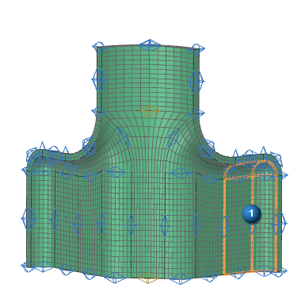
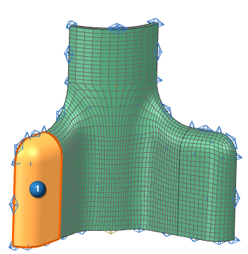
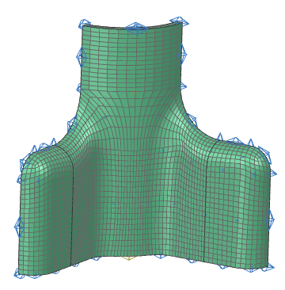

Complete the swept mesh
The 3D Swept Mesh dialog box is still open from the previous step.
-
Rotate to display the front of the part.
-

 highlighted faces (4 faces total)
highlighted faces (4 faces total)

-
 Select Target Face
Select Target Face -
highlighted face on the back side of the part

-
OK
The completed mesh is shown below.

|
File |
-
Close→All Parts